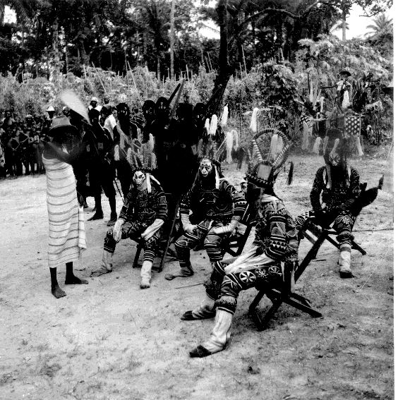

|
 |
Village
of Umuofia
Teachers
|
The Village of Umuofia brings students into the imaginative environment of Things Fall Apart, what Jeff Wilhelm called reading's "secondary world." Student success in this virtual reality will depend greatly on you, the teacher. The environment can be used in different ways; what I suggest below is only one approach. As well as serving as a class role play, it can be explored by individual students or groups. The role play can be organized for a single class, or, with careful planning, can involve multiple classes at the same time from different places, including different countries.
Before they participate in the role play, students should spend time exploring the Village of Umuofia, its rooms and objects, and learn the easy actions that will let them move from room to room and speak.
I have created a map and an activity that will facilitate this learning called First Visit. First Visit can take place before, during, or after reading the novel. As I constructed the activity it can be assigned as homework requiring approximately one hour, and need not be done simultaneously by all students at the same time. On the other hand, it would also be effective to do First Visit as an in-class activity perhaps using a data projector where everyone can see the environment as the teacher navigates through it. Teacher-led discussion of the images before students write about them scaffolds their learning.
Since the world of the Igbo in the 19th Century is so different from that of students today, the photographs used in this website and in the Village of Umuofia will be useful to help students understanding of the novel. The students are encouraged to explore the archive from which the photos are taken and ask critical questions about the origin of these pictures after the First Visit activity.
Students may be very interested in the traditional West African music they will hear in the Village of Umuofia. An attentive reading of Things Fall Apart will show the close integration of music, story telling, dance, and ritual celebration in the lives of the Igbo. Traditional West African music has had an enormous impact on world music and students may enjoy learning more about this important aspect of African cultures.
The Role Play activity will work best if students have had a chance to think -- and write -- from the point of view of their character before engaging in it. Contact me via email, allen.webb@wmich.edu, and I can provide you with usernames and passwords that will allow your students to "wake up" in the Village of Umuofia in character. Though there are 39 character roles listed, this number is flexible. The environment can work well with fewer, or with more characters -- many roles can be doubled, that is played by two students at the same time working at the same terminal. (You will want to verify that the time you plan to use the environment it is not in use by another teacher, the first class that enters with the passwords will have priority. It may be possible to coordinate your use of the space with students from another school.)
In a way the virtual reality functions like a related group of chat rooms: all students must be present at the same time for them to communicate with each other. Although the role play is designed to be used in a single class period, it can also be extended to several class periods, or longer, depending on the goals of the teacher and the interest of students.
Students need to engage in a careful reading and discussion of Achebe's novel for this activity to be useful to them. There are many sites on the internet to support the reading of Things Fall Apart, including Paul Brians' Study Guide and Cora Agatucci's Reading and Study Questions. I have developed a page to help students write critical analysis papers about the novel.
Drawing on the novel I have identified a series of events that can happen in the Village. You can use these events to stimulate dialogue and role play. You might prepare the students for the events by prior writing or discussion or simply announce as students are engaged in the role play. Experience of teachers using the environment shows the advantage of carefully organizing student activity in the Village of Umuofia.
The Village of Umuofia will be a far richer experience if students write and discuss about what they are learning during or soon after participating. Questions they might consider include:
I am currently engaged in research on the use of virtual reality environments to supplement the teaching of literature and I welcome your questions, feedback, comments, and participation in this research effort.
I